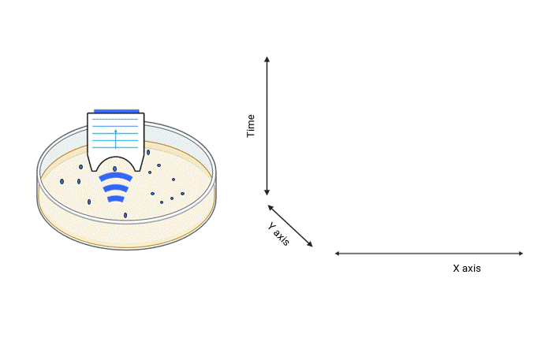
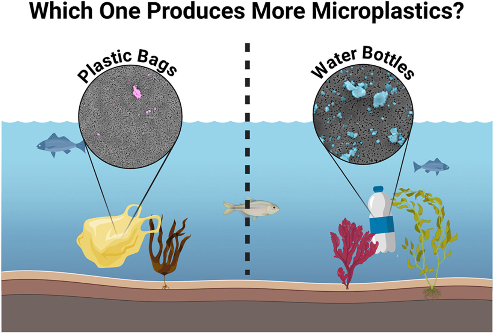
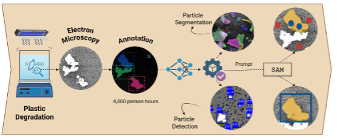
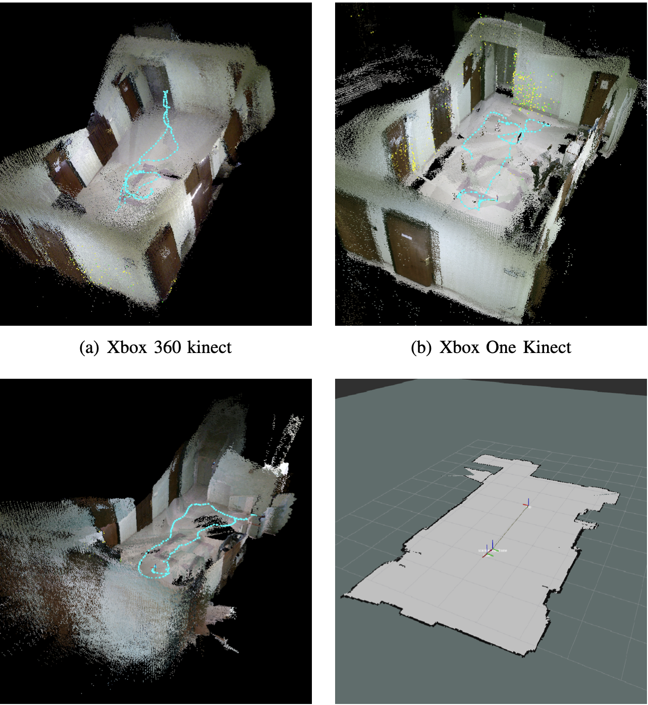

Featured Publications

High-frequency ultrasound combined with deep learning enables identification and size estimation of microplastics
N Zarrabi, EM Strohm, H Rezvani, M Lisondra, N Yousefi, S Saeedi, ...
npj Emerging Contaminants 2 (1), 9 | 2026

H-SPAR: Hydrodynamic-aware Simulation for Particle Transport and Autonomous Robots
Navid Zarrabi, Nariman Yousefi, Sajad Saeedi | Under Review, 2025
Submitted 2026

Analysis of microplastics and nanoplastics emerged from polyethylene bags and polyethylene terephthalate bottles by an artificial intelligence-enabled tool
H Rezvani, M Kapadia, J Costantino, N Zarrabi, S Saeedi, N Yousefi
Environmental Pollution, 127453 | 2025

Morphological detection and classification of microplastics and nanoplastics emerged from consumer products by deep learning
H Rezvani, N Zarrabi, I Mehta, C Kolios, HA Jaafar, CH Kao, S Saeedi, ...
arXiv preprint arXiv:2409.13688 | 2024

Robot localization performance using different SLAM approaches in a homogeneous indoor environment
N Zarrabi, R Fesharakifard, MB Menhaj
2019 7th International Conference on Robotics and Mechatronics (ICRoM), 338-344 | 2019